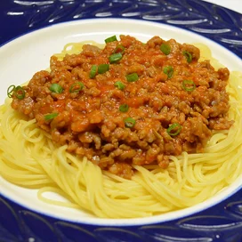

Spaghetti Recipe

Description
This spaghetti will bring a classic yet comforting feeling. It will remind you of your childhood with every bite.
If you ever wondered why your dads spaghetti was so well remembered, please follow the recipe listed below:
Ingredients
- 1 pound of spaghetti
- 2 pounds of lean ground beef
- 1 onion, minced
- 1(6 ounce) can of tomato paste
- 2(10.75 ounce) cans of condensed tomato soup
- 2 1/2 cups of water
Preparation and Steps
- Bring a large pot of lightly salted water to a boil.
- Add pasta and cook for 8 to 10 minutes or until al dente; drain.
- Prepare a large skillet and set the heat to medium.
- Cook the ground beef with onion until meat is brown.
- Return meat into mixture with tomato paste, tomato soup, and water.
- Cook for 5 to 15 minutes while stirring until thickened.
Back to Recipes